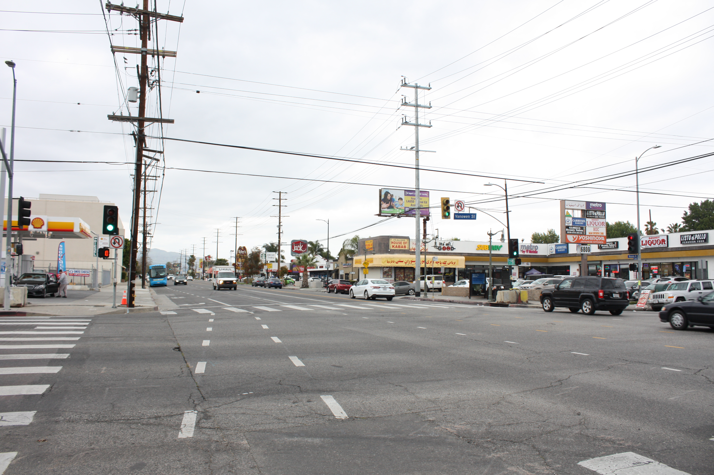
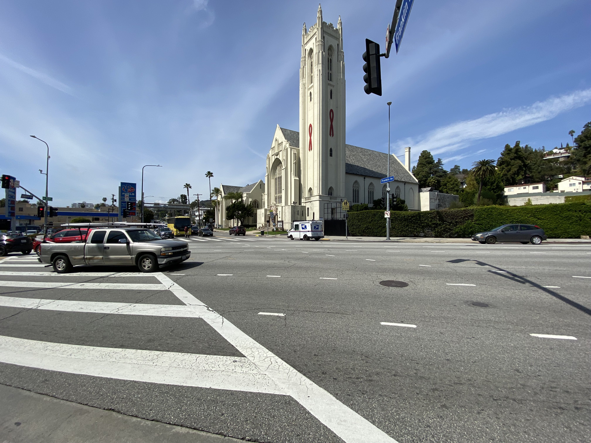

Reseda Blvd & Vanowen St: Intersection Report
Looking north along Reseda Blvd from the intersection of Reseda & Vanowen
These two busy streets meet at an intersection that has been one of CD4’s most dangerous for pedestrians over the past four years. Both streets have 6 lanes, and both are major thoroughfares that run basically the entire length of the San Fernando Valley. Although improvements like bike lanes and bus boarding islands were recently installed on this stretch of Reseda Blvd as a part of LADOT’s Complete Streets Program, Vanowen is just as dangerous as Reseda for non-drivers. Despite Vanowen Street having actually seen more pedestrian deaths than Reseda in recent years, there has been no comparable investment in safety measures. At this intersection, pedestrians must cross a busy 6-lane road in either direction with cars constantly turning right on red. The recently installed bike lanes on Reseda are better than nothing, but as is true of many Los Angeles streets, the lanes disappear as bikers get close to the intersection (where most collisions occur) to allow cars to turn right, raising the risk for bikers in the intersection.
Potential Intersection Safety Improvements:
- Invest in bike lanes on Vanowen St to match those on Reseda Blvd
- Extend Reseda Blvd bike lanes all the way to intersection
- Install “no right on red” signs on Reseda Blvd and implement protected left turns for drivers
Reseda Blvd & Saticoy St: Intersection Report

Looking north along Reseda Blvd from the intersection of Reseda & Saticoy St; note the bus boarding island on the right side of Reseda
At this intersection, two busy roads meet at a chaotic juncture that has been deadly for pedestrians in the past. These two major thoroughfares both have 6 lanes, and the high volume of traffic means that non-drivers are forced to constantly check for incoming vehicles even when they have the green light to cross. This intersection was chosen to benefit from LADOT’s Complete Streets Program (as a part of a longer stretch of Reseda), but the most major change to the area was the addition of a bus boarding island on the north side of Reseda. Bike lanes were also added to Reseda Blvd, but they don’t reach all the way to the intersection in many places to allow drivers to turn right. Saticoy Street also has a higher-than-usual speed limit of 40 miles per hour, above even Reseda Boulevard’s limit of 35 mph, which is the standard for local arterial roads in Los Angeles. Finally, the presence of large surface parking lots at all four corners of the intersection means that there is a constant flow of cars pulling out into the street near into the right lane, leading to potential accidents involving bikers coming down the street who might be hard for cars to see.
Potential Intersection Safety Improvements:
- Decrease speed limit on Saticoy Street to 35 mph
- A 5 mph reduction may not seem like much, but an NHTSA literature review found that a reduction in mean vehicle speed from 40mph to 35mph can reduce fatal crashes from 8% of all crashes to less than 5%
- Redesign parking lots near intersection to increase visibility of incoming bikers
- Extend bike lanes on Reseda to meet intersection
Ventura Blvd & Van Nuys Blvd: Intersection Report

Looking north along Ventura Blvd from the intersection of Ventura & Van Nuys Blvd
Two of the Valley’s busiest streets meet at this intersection, leading to potential for danger as non-drivers try to navigate the mess of cars. Here, the large number of lanes on the streets leads to confusion for drivers that can be dangerous for pedestrians, especially on Ventura, which has two left-turn lanes turning north onto Van Nuys. There have clearly been some attempts at traffic calming here, with painted medians installed in on two of the four streets leading to the intersection, but more is needed to make the area truly safe for non-drivers. All of the crashes recorded at this intersection have involved pedestrians, not bikers, so the lack of bike lanes is comparatively unimportant in terms of safety (although this may just be luck, or simply due to the fact that few people bike in the neighborhood). Therefore, improvements should focus on making street crossing safer for pedestrians.
Potential Intersection Safety Improvements:
- Add painted median on westbound Ventura Blvd (eliminate one turn lane)
- Make traffic light signaling more pedestrian-friendly (ex: change pedestrian sign to “walk” a few seconds before lights turn green)
- This has been shown to reduce collisions by as much as 60%!
- Add protected left turns to northbound Van Nuys and eastbound Ventura
Highland Ave & Franklin Ave: Intersection Report
Looking east on Franklin Ave from the intersection of Highland Ave & Franklin
This intersection is the only of the top 5 most dangerous that’s located outside of the Valley; in fact, it’s located right at the southern border of the district where CD4 meets CD13. The intersection has seen 7 crashes, all involving pedestrians, in the last four years. Here, Highland Avenue is the busier of the two streets, acting as a major arterial between the 101 freeway and east-west streets like Santa Monica and Wilshire; Franklin St is comparably smaller.
There are no bike lanes on any of the streets, and there’s a crosswalk missing on the south side of Highland, which likely leads pedestrians to scramble across during a green light, risking injury or worse. Also, the intersection is located in a very busy pedestrian area, meaning that there’s a constant high volume of people needing to get across the intersection despite its subpar infrastructure.
Highland Ave was selected to be a part of LADOT's livable streets program, but the selected section ends just south of this intersection (near the CD14 border).
Potential Intersection Safety Improvements:
- Paint a crosswalk on southern side of Highland
- Add a physical median to Highland (remove one lane of traffic from northern side of street)
- Add bike lanes to Highland Ave
- Extend the Livable Streets Program north to this intersection (and beyond to the 101)
Burbank & Van Nuys: Intersection Report

Looking south on Van Nuys Blvd from the intersection of Burbank Ave & Van Nuys
This intersection in the Valley has the most street safety measures of the top 5 most dangerous intersections in the district; in part because of that, only one person has been seriously injured there in the past 4 years, and nobody has been killed. The streets comprising the intersection are still wide and busy, but they both have measures like bike lanes (some of which are protected) that increase safety for non drivers. Van Nuys Blvd also has a median, which both reduces traffic and forces drivers to pay more attention to their surroundings. Some of the bike lanes are marked through the intersection, which is helpful, but several also end before the intersection even starts (to allow cars to turn right).
Potential Intersection Safety Improvements:
- Extend all bike lanes through intersection
- Make traffic light signaling more pedestrian-friendly (ex: change pedestrian sign to “walk” a few seconds before lights turn green)
- This has been shown to reduce collisions by as much as 60%!
- Bonus: Add diagonal crosswalks & all-way walk signals